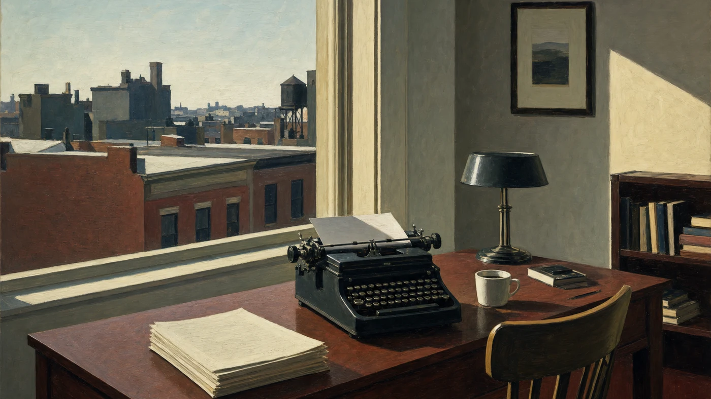

Novel · 2019
Give Them Unquiet Dreams
Kirkus-starred novel · One of Kirkus Reviews' Best Books of 2019.
Download coverBios in three lengths, awards, web-ready book covers, selected blurbs, and contact. All materials are free to use with attribution to James Mulhern.
Download the One-Sheet PDF
James Mulhern is a Philadelphia-based novelist, poet, and essayist. His Kirkus-starred novel Give Them Unquiet Dreams was named a Best Book of 2019. He is the founder of Silver Current Press.
James Mulhern is a Philadelphia-based novelist, poet, essayist, and professor emeritus. His fiction, poetry, and nonfiction have appeared in more than 300 international literary journals and anthologies. His novel Give Them Unquiet Dreams received a Kirkus starred review and was named one of Kirkus Reviews' Best Books of 2019. He was awarded a fully paid Creative Writing Fellowship to the University of Oxford and nominated for the Pushcart Prize. He is the founder of Silver Current Press.
James Mulhern is a Philadelphia-based novelist, poet, essayist, and professor emeritus whose fiction, poetry, and nonfiction have appeared in more than 300 international literary journals and anthologies. His novels and story collections — among them Give Them Unquiet Dreams, Molly Bonamici, A Prayer for Home, and Assumptions and Other Stories — have earned favorable critiques from Kirkus Reviews, including a starred review.
In 2015, Mulhern was awarded a fully paid Creative Writing Fellowship to the University of Oxford and graduated with “Highest Distinction,” the university's highest designation. That same year, a story of his was longlisted for the Fish Short Story Prize. In 2017, he was nominated for a Pushcart Prize. He has been shortlisted for the Aesthetica Creative Writing Award, nominated for Best of the Net, and named a Finalist for the Tuscany Prize in Catholic Fiction. He is the founder of Silver Current Press, which publishes literary fiction, poetry, and nonfiction.
Novel · 2019
Kirkus-starred novel · One of Kirkus Reviews' Best Books of 2019.
Download cover
Novel · 2016
A novel of a resilient young woman whose name and spirit echo Defoe's Moll Flanders.
Download cover
Novella
A spare, lyrical novella — Wishing Shelf Red Ribbon Winner.
Download cover
"A luminous, beautifully told fairy tale grounded in history and elevated by spirit." — Kirkus Reviews (starred), on Give Them Unquiet Dreams
"Give Them Unquiet Dreams is brilliant; it's most highly recommended." — Readers' Favorite, on Give Them Unquiet Dreams
"Well-written, complex characters and a fantastic voice." — The Missouri Review, on A Prayer for Home
Get The Quiet Craft: A Working Writer's Notebook — an expanded collection of working notes on fiction, poetry, and memoir craft — free, plus occasional word of new essays, poems, and guides. No spam, unsubscribe anytime.
Join the Circle & Get the Booklet